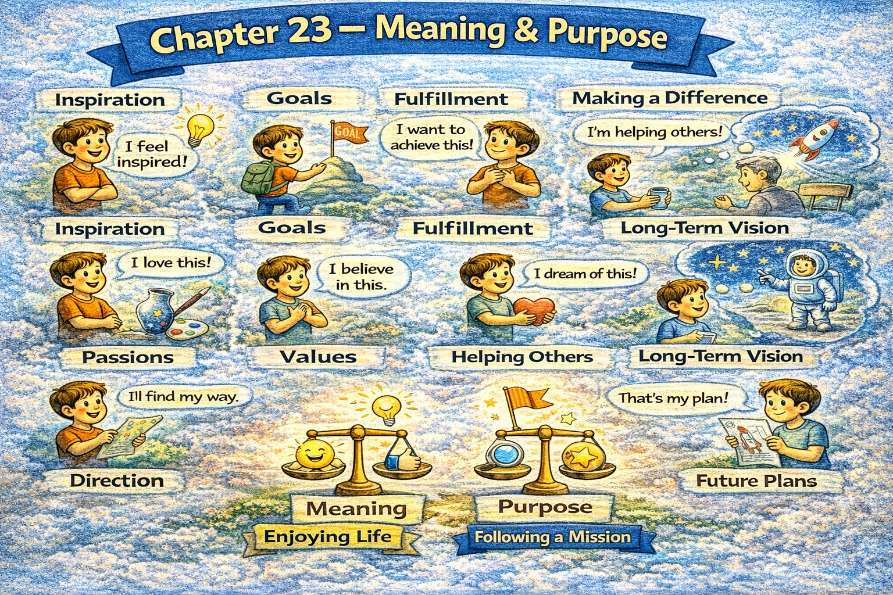

Chapter 23 — Meaning & Purpose

Micro Scene 1 — Defining Meaning
1️⃣ Scene Text
Meaning is not inherent in events; it is assigned through interpretation.
An action becomes meaningful when it aligns with a larger purpose.
If effort connects to a long-term direction, motivation stabilizes.
Meaning transforms routine into intention.
I ask whether my actions serve something beyond immediate reward.
Without context, achievement feels temporary.
When purpose is clear, difficulty becomes tolerable.
Meaning depends on alignment between value and action.
If I act without direction, progress feels fragmented.
Significance emerges through coherence.
Purpose gives structure to effort.
2️⃣ Core Verb Pool
assign
align
connect
stabilize
transform
serve
feel
depend
emerge
give
3️⃣ Structure Patterns
X is not inherent; it is + past participle
If X + verb, Y + verb
Without X, Y + verb
When X + verb, Y + verb
X gives Y to + noun
4️⃣ Replace & Extend
Replace alignment:
If my work aligns with my values…
→ If my actions support long-term goals…
→ If my effort contributes to growth…
Replace fragmentation:
Without direction, progress feels scattered.
→ Without purpose, effort feels empty.
→ Without coherence, action feels random.
Replace significance:
Meaning emerges from connection.
→ Significance arises from alignment.
→ Purpose stabilizes effort.
5️⃣ Spoken Mode
Meaning isn’t automatic — we assign it.
If my effort connects to something bigger, it feels worthwhile.
Without purpose, progress feels scattered.
Purpose makes effort stable.
🔎 Structural Notes
• “not inherent; assigned” = philosophical precision.
• Purpose stabilizes emotion under difficulty.
• Meaning = alignment + direction.
Micro Scene 2 — Long-Term Vision
1️⃣ Scene Text
Long-term vision provides direction beyond immediate outcomes.
I define success in terms of trajectory rather than isolated results.
If daily actions align with long-term intention, progress compounds.
Vision organizes effort across time.
Short-term setbacks lose intensity within a broader horizon.
When direction is clear, decision-making simplifies.
I evaluate choices based on future consequence rather than immediate comfort.
A clear trajectory reduces distraction.
If goals remain undefined, energy disperses.
Vision transforms time into structure.
Long-term orientation stabilizes motivation.
2️⃣ Core Verb Pool
provide
define
align
compound
organize
lose
simplify
evaluate
reduce
remain
disperse
transform
stabilize
3️⃣ Structure Patterns
X provides Y
If X + verb, Y + verb
When X + verb, Y + verb
X reduces + noun
If X remains + adjective, Y + verb
X transforms A into B
4️⃣ Replace & Extend
Replace trajectory:
I focus on direction, not moments.
→ I think in terms of long-term growth.
→ I prioritize trajectory over temporary success.
Replace compounding:
Small effort compounds over time.
→ Consistency accumulates gradually.
→ Repetition creates momentum.
Replace dispersion:
If direction is unclear…
→ If priorities shift constantly…
→ If goals are inconsistent…
5️⃣ Spoken Mode
I care more about direction than quick wins.
If my daily work aligns with my long-term goal, progress adds up.
Short-term setbacks matter less in the long run.
Vision keeps me focused.
🔎 Structural Notes
• “trajectory” implies directional continuity.
• “compound” introduces growth principle.
• Vision filters daily decision-making.
Micro Scene 3 — Contribution & Service
1️⃣ Scene Text
Meaning deepens when effort contributes beyond the self.
I evaluate my work not only by personal gain, but by collective impact.
If my actions improve conditions for others, significance increases.
Contribution transforms ambition into responsibility.
When service becomes part of intention, motivation stabilizes.
I ask whether my skills create value beyond individual advancement.
Impact often outweighs recognition.
If contribution aligns with competence, fulfillment expands.
Service connects identity to community.
Meaning grows through shared benefit.
Contribution extends purpose beyond personal reward.
2️⃣ Core Verb Pool
deepen
evaluate
improve
increase
transform
stabilize
create
outweigh
align
expand
connect
grow
extend
3️⃣ Structure Patterns
X deepens when + clause
I evaluate X not only by A, but by B
If X + verb, Y + verb
When X + verb, Y + verb
X connects A to B
4️⃣ Replace & Extend
Replace contribution:
If my work helps others…
→ If my effort solves real problems…
→ If my action creates shared value…
Replace impact:
Impact outweighs recognition.
→ Contribution matters more than applause.
→ Influence matters more than status.
Replace expansion:
Meaning expands through service.
→ Purpose grows through contribution.
→ Fulfillment increases when value is shared.
5️⃣ Spoken Mode
Meaning feels deeper when I contribute.
It’s not just about what I gain — it’s about what I add.
If my work helps others, it feels more significant.
Impact matters more than recognition.
🔎 Structural Notes
• “not only…, but…” balances self vs collective.
• Contribution links identity to external value.
• Service stabilizes long-term motivation.
Micro Scene 3 — Contribution & Service
1️⃣ Scene Text
Meaning deepens when effort contributes beyond the self.
I evaluate my work not only by personal gain, but by collective impact.
If my actions improve conditions for others, significance increases.
Contribution transforms ambition into responsibility.
When service becomes part of intention, motivation stabilizes.
I ask whether my skills create value beyond individual advancement.
Impact often outweighs recognition.
If contribution aligns with competence, fulfillment expands.
Service connects identity to community.
Meaning grows through shared benefit.
Contribution extends purpose beyond personal reward.
2️⃣ Core Verb Pool
deepen
evaluate
improve
increase
transform
stabilize
create
outweigh
align
expand
connect
grow
extend
3️⃣ Structure Patterns
X deepens when + clause
I evaluate X not only by A, but by B
If X + verb, Y + verb
When X + verb, Y + verb
X connects A to B
4️⃣ Replace & Extend
Replace contribution:
If my work helps others…
→ If my effort solves real problems…
→ If my action creates shared value…
Replace impact:
Impact outweighs recognition.
→ Contribution matters more than applause.
→ Influence matters more than status.
Replace expansion:
Meaning expands through service.
→ Purpose grows through contribution.
→ Fulfillment increases when value is shared.
5️⃣ Spoken Mode
Meaning feels deeper when I contribute.
It’s not just about what I gain — it’s about what I add.
If my work helps others, it feels more significant.
Impact matters more than recognition.
🔎 Structural Notes
• “not only…, but…” balances self vs collective.
• Contribution links identity to external value.
• Service stabilizes long-term motivation.
Micro Scene 4 — Sacrifice & Trade-Off
1️⃣ Scene Text
Purpose requires selective sacrifice.
Every commitment excludes alternative possibilities.
If I choose one path, I forgo another.
Trade-offs clarify what I truly value.
When comfort conflicts with direction, decision reveals priority.
Sacrifice is not loss; it is alignment.
I evaluate what I am willing to exchange for long-term gain.
If short-term pleasure undermines future growth, restraint becomes rational.
Commitment narrows options but deepens focus.
Meaning intensifies when effort is deliberate.
Trade-offs convert intention into structure.
2️⃣ Core Verb Pool
require
exclude
choose
forgo
clarify
conflict
reveal
evaluate
exchange
undermine
become
narrow
deepen
intensify
convert
3️⃣ Structure Patterns
X requires + noun
If I + verb, I + verb
When X conflicts with Y, Z + verb
X is not A; it is B
If X + verb, Y + verb
X converts A into B
4️⃣ Replace & Extend
Replace sacrifice:
If I invest time here…
→ If I commit to this goal…
→ If I prioritize growth…
Replace restraint:
Restraint protects direction.
→ Discipline preserves trajectory.
→ Focus reduces distraction.
Replace conversion:
Trade-offs convert desire into decision.
→ Sacrifice transforms intention into commitment.
→ Limitation strengthens clarity.
5️⃣ Spoken Mode
If I choose this, I give up something else.
Sacrifice isn’t loss — it’s focus.
Trade-offs show what I really value.
Direction requires discipline.
🔎 Structural Notes
• “forgo” signals conscious relinquishment.
• Trade-off = structural prioritization.
• Sacrifice clarifies hierarchy.
Micro Scene 5 — Legacy & Impact Over Time
1️⃣ Scene Text
Legacy reflects impact beyond immediate presence.
I consider how my actions compound over time.
If decisions create lasting structure, their significance increases.
Short-term visibility does not guarantee long-term value.
When effort contributes to enduring systems, meaning deepens.
I evaluate success by sustainability rather than intensity.
If influence fades quickly, impact remains shallow.
Legacy requires patience and consistency.
Time reveals the true weight of action.
Enduring contribution outweighs temporary recognition.
Meaning extends through continuity.
2️⃣ Core Verb Pool
reflect
consider
compound
create
increase
guarantee
contribute
deepen
evaluate
fade
remain
require
reveal
outweigh
extend
3️⃣ Structure Patterns
X reflects + noun
If X + verb, Y + verb
X does not guarantee Y
When X + verb, Y + verb
X outweighs Y
X extends through + noun
4️⃣ Replace & Extend
Replace compounding:
If effort compounds…
→ If consistency accumulates…
→ If systems endure…
Replace sustainability:
I measure impact by sustainability.
→ I prioritize durability over intensity.
→ I value long-term structure over short-term noise.
Replace endurance:
Legacy requires repetition.
→ Impact requires continuity.
→ Meaning requires persistence.
5️⃣ Spoken Mode
I think about long-term impact.
Short-term attention doesn’t equal lasting value.
If something endures, it matters more.
Legacy takes time.
🔎 Structural Notes
• “compound” signals exponential growth over time.
• “outweigh” expresses comparative priority.
• Legacy = sustained structural influence.
Micro Scene 6 — Living With Coherence
1️⃣ Scene Text
A meaningful life requires internal coherence.
My actions, values, and long-term direction must align.
If daily behavior contradicts declared purpose, fragmentation follows.
Coherence reduces internal conflict.
When intention and execution converge, clarity increases.
I evaluate whether my routine reflects my priorities.
If purpose remains abstract, action loses direction.
Alignment transforms ambition into stability.
Living coherently simplifies decision-making.
Consistency across domains strengthens identity.
Meaning stabilizes when belief and behavior converge.
2️⃣ Core Verb Pool
require
align
contradict
follow
reduce
converge
increase
evaluate
remain
lose
transform
simplify
strengthen
stabilize
3️⃣ Structure Patterns
X requires + noun
If X + verb, Y + verb
When X + verb, Y + verb
X transforms A into B
X strengthens + noun
X stabilizes when + clause
4️⃣ Replace & Extend
Replace alignment:
My routine reflects my values.
→ My habits reflect my priorities.
→ My decisions reflect my direction.
Replace fragmentation:
If actions conflict with purpose…
→ If effort lacks direction…
→ If goals remain inconsistent…
Replace stability:
Alignment creates stability.
→ Coherence builds confidence.
→ Consistency sustains meaning.
5️⃣ Spoken Mode
I want my daily actions to match my long-term goals.
If my behavior doesn’t align with my purpose, something feels off.
Coherence makes decisions easier.
When belief and action match, life feels stable.
🔎 Structural Notes
• “converge” implies structural intersection.
• Coherence = cross-domain alignment.
• Meaning is sustained through consistency.
🔸 Integration Scene — Meaning Structure
Meaning is assigned through interpretation.
Purpose organizes direction.
Vision stabilizes effort.
Contribution deepens significance.
Sacrifice clarifies priority.
Legacy reflects sustained impact.
Coherence reduces conflict.
Alignment produces stability.
Trade-offs define commitment.
Sustainability outweighs intensity.
Impact compounds over time.
Consistency strengthens identity.
Purpose transforms effort.
Direction simplifies choice.
Contribution extends beyond self.
Meaning stabilizes life.
Integration Verb Focus
align
serve
sustain
compound
prioritize
integrate
stabilize
extend